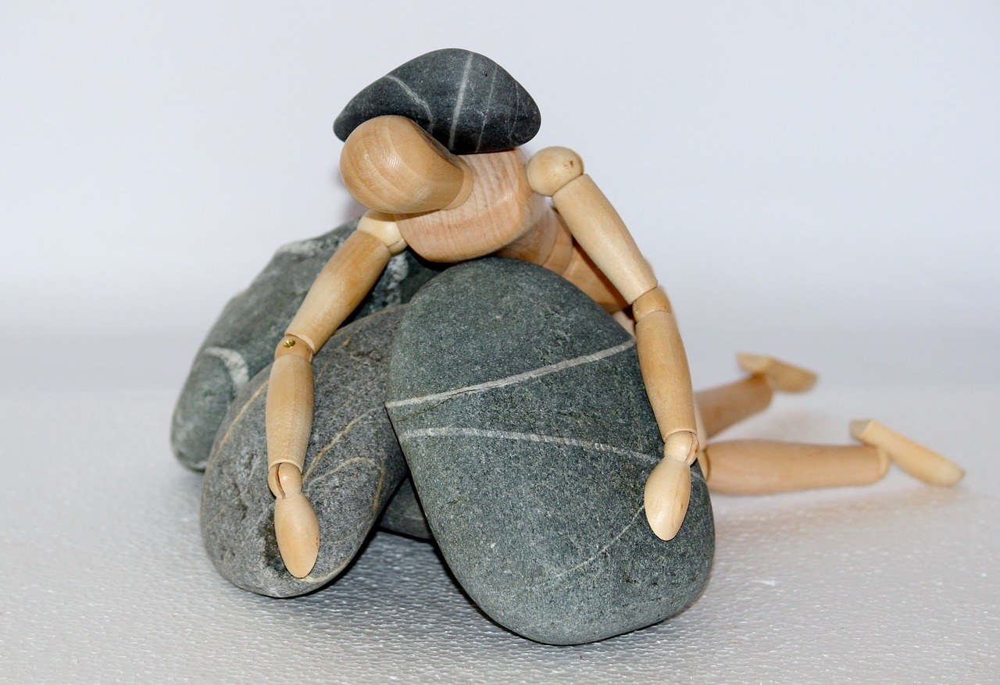

Saúde da Mulher: Um Guia Completo para o Bem-Estar Feminino
A saúde da mulher é um tema abrangente que engloba diversos aspectos físicos, emocionais e sociais. Desde a puberdade até a menopausa, as mulheres passam por diversas mudanças em seus corpos e vivem diferentes etapas da vida, cada uma com seus próprios desafios e necessidades.
Cuidados Ginecológicos: Prevenção e Bem-Estar
Os cuidados ginecológicos são essenciais para a saúde da mulher, permitindo a detecção precoce de doenças, a prevenção de problemas e a promoção do bem-estar geral. As consultas ginecológicas regulares devem fazer parte da rotina de todas as mulheres, mesmo que não apresentem nenhum sintoma.
Exames Ginecológicos Rutinários:
- Papanicolau: O exame Papanicolau é fundamental para a detecção precoce do câncer do colo do útero. Deve ser realizado anualmente entre os 25 e 65 anos.
- Colposcopia: A colpospia é um exame complementar ao Papanicolau que permite visualizar o colo do útero em detalhes, possibilitando a identificação de lesões pré-cancerosas.
- Exame das mamas: O exame das mamas, realizado por um médico ou por autoexame, é importante para a detecção precoce do câncer de mama.
- Outros exames: Dependendo da idade e do histórico da mulher, outros exames ginecológicos podem ser necessários, como ultrassom transvaginal, exames de sangue e exames de urina.
Prevenção de Doenças:
- Vacinação: As mulheres devem manter a carteira de vacinação em dia, incluindo as vacinas contra o HPV, tétano e difteria.
- Alimentação saudável: Uma dieta rica em frutas, legumes, verduras e grãos integrais ajuda a prevenir diversas doenças, como doenças cardíacas, diabetes e alguns tipos de câncer.
- Atividade física regular: Praticar exercícios físicos regularmente, pelo menos 30 minutos por dia, ajuda a manter o peso corporal, fortalecer os músculos e ossos, reduzir o estresse e prevenir doenças.
- Evitar o tabagismo: O tabagismo é um dos principais fatores de risco para diversas doenças, como câncer de pulmão, doenças cardíacas e AVC.
- Consumo moderado de álcool: O consumo excessivo de álcool pode aumentar o risco de diversas doenças, como câncer de fígado, doenças cardíacas e cirrose hepática.
Saúde Sexual: Prazer, Segurança e Bem-Estar
A saúde sexual é um componente importante da saúde da mulher. Ela envolve o bem-estar físico, emocional e social em relação à sexualidade, incluindo a capacidade de ter relações sexuais seguras e satisfatórias.
Algumas dicas para uma vida sexual saudável:
- Comunicação: Converse com seu parceiro sobre seus desejos, necessidades e limites.
- Consentimento Certifique-se de que você e seu parceiro estão de acordo com a atividade sexual antes de iniciá-la.
- Proteção Utilize métodos contraceptivos adequados para prevenir gravidez indesejada e doenças sexualmente transmissíveis (DSTs).
- Prazer Explore e descubra o que te dá prazer e o que te faz sentir bem.
- Ajuda profissional: Se você está enfrentando dificuldades em sua vida sexual, procure ajuda profissional de um psicólogo ou sexólogo.
Saúde Mental e Emocional: Equilíbrio e Bem-Estar
A saúde mental e emocional é fundamental para o bem-estar geral da mulher. O estresse, a ansiedade, a depressão e outros problemas de saúde mental podem afetar negativamente a qualidade de vida e o relacionamento com os outros.
Algumas dicas para cuidar da saúde mental e emocional:
- Autocuidado: Dedique tempo para si mesma, faça atividades que te tragam prazer e relaxe.
- Sono de qualidade: Dormir de 7 a 8 horas por noite é essencial para o bom funcionamento do corpo e da mente.
- Alimentação saudável: Uma dieta rica em nutrientes ajuda a manter o cérebro funcionando bem e a reduzir os sintomas de estresse e ansiedade.
- Atividade física: Praticar exercícios físicos regularmente ajuda a liberar endorfinas, que têm efeito antidepressivo.
- Relacionamentos saudáveis: Cultivar relacionamentos positivos com amigos, familiares e parceiro amoroso é importante para o bem-estar emocional.
- Ajuda profissional: Se você está enfrentando problemas de saúde mental, procure ajuda profissional de um psicólogo ou psiquiatra.
Maternidade e Amamentação: Um Desafio de Amor
A maternidade é uma experiência única e transformadora na vida da mulher. No entanto, também é um período de grandes mudanças físicas, hormonais e emocionais. É fundamental que a mulher receba o suporte necessário para cuidar de si mesma e do bebê durante a gestação e a amamentação.
Cuidados Pré-Natal:
O pré-natal é um acompanhamento médico fundamental durante a gestação. Ele permite a detecção precoce de possíveis problemas, o esclarecimento de dúvidas e a preparação para o parto.
Amamentação:
A amamentação é o alimento ideal para o bebê, pois fornece todos os nutrientes que ele precisa para se desenvolver de forma saudável. Além disso, a amamentação também traz benefícios para a saúde da mulher, como a redução do risco de câncer de mama e o fortalecimento do vínculo mãe e filho.
Cuidados Pós-Parto:
O período pós-parto é um momento de adaptação para a mulher e para o bebê. É importante que a mulher receba apoio emocional e físico para se recuperar do parto e para cuidar do recém-nascido.
Saúde da Mulher nas Diferentes Fases da Vida:
Ao longo da vida, a mulher passa por diferentes fases, cada uma com suas particularidades no que diz respeito à saúde.
- Puberdade: Durante a puberdade, a mulher experimenta o desenvolvimento dos órgãos sexuais, a menstruação e as mudanças hormonais. É importante que as meninas recebam orientação adequada sobre sexualidade, higiene íntima e cuidados com a saúde.
- Idade adulta: Na idade adulta, a mulher deve continuar realizando os exames ginecológicos periódicos e adotar hábitos de vida saudáveis para prevenir doenças.
- Climatério e menopausa: O climatério é a fase de transição para a menopausa, que é a cessação definitiva da menstruação. Durante o climatério, a mulher pode sentir sintomas como ondas de calor, alterações de humor e insônia. A terapia hormonal pode ser uma opção para aliviar esses sintomas.
Conclusão
A saúde da mulher é um tema complexo e abrangente. Ao longo da vida, as mulheres enfrentam diversos desafios e necessidades específicas de saúde. Tomando decisões saudáveis, realizando exames ginecológicos regulares e buscando informações confiáveis, a mulher pode promover o seu bem-estar físico, mental e emocional em todas as fases da vida.
A HelthWay: Sua Parceira para uma Vida Saudável
A HelthWay acredita que a saúde da mulher merece atenção especial. Por isso, oferecemos diversos recursos para te auxiliar a cuidar de si mesma em todas as etapas da vida:
- Conteúdo informativo sobre a saúde feminina: Nosso blog oferece artigos, vídeos e podcasts sobre diversos temas relacionados à saúde da mulher, desde a puberdade até a menopausa.
- Conexão com ginecologistas e obstetras qualificados: Através da nossa plataforma, você pode encontrar médicos ginecologistas e obstetras online e presenciais para te acompanhar em todas as fases da vida.
- Comunidade de apoio online: A HelthWay oferece fóruns e grupos de apoio online para que você possa conectar-se com outras mulheres que compartilham dos mesmos desafios e experiências.
Junte-se à HelthWay e comece a jornada para uma vida saudável e plena!
Posts relacionados

24 Maio 2024 / Artigo 4 - Psicologia
Cuidando da Mente: A Importância da Saúde Mental para o Bem-Estar
Em um mundo cada vez mais complexo e veloz, onde as demandas da vida moderna parecem se multiplicar a cada dia, cuidar da saúde mental se torna uma necessidade fundamental, não um luxo. Mais do que a simples ausência de doenças, a saúde mental representa um estado de bem-estar emocional, psicológico e social, permitindo que o indivíduo se sinta bem consigo mesmo, com seus relacionamentos e com o mundo ao seu redor.
Ler Mais >>
24 Maio 2024 / Artigo 7 - Ginecologia
Saúde da Mulher: Um Guia Completo para o Bem-Estar Feminino
A saúde da mulher é um tema abrangente que engloba diversos aspectos físicos, emocionais e sociais. Desde a puberdade até a menopausa, as mulheres passam por diversas mudanças em seus corpos e vivem diferentes etapas da vida, cada uma com seus próprios desafios e necessidades.
Ler Mais >>
24 Maio 2024 / Artigo 10 - Oftalmologia
Visão Saudável: Protegendo Seus Olhos para uma Vida Melhor
A visão é um dos sentidos mais importantes do ser humano. Ela nos permite apreciar a beleza do mundo ao nosso redor, interagir com as pessoas e realizar diversas atividades essenciais para o dia a dia. Por isso, cuidar da saúde dos olhos é fundamental para manter uma boa qualidade de vida e prevenir doenças oculares que podem levar à perda da visão.
Ler Mais >>
Assine nossa Newsletter
Mantenha-se atualizado com insights frescos e análises relevantes, tudo enviado diretamente para você
Compartilhe